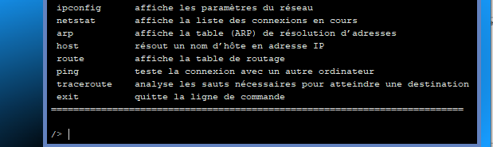

On a vu dans les activités précédentes comment écrire un petit site web en HTML et l'afficher dans un
navigateur. Tous les fichiers nécessaires à l'affichage des pages web, le code HTML, la feuille de style CSS et
les images étaient stockées localement sur l'ordinateur. Mais en général on consulte des sites web qui ne
sont pas sur notre ordinateur, alors comment les fichiers arrivent jusqu'à nous ?
Le modèle client-serveur
Regardez "Comprendre le serveur web en 2 minutes" sur https://www.youtube.com/watch?v=msB9AvJ4bTM pour répondre aux questions suivantes.
-
Laquelle de ces affirmations est fausse ?
Pour afficher une page web sur internet ...
- Un client, généralement un navigateur, fait une demande au serveur web.
- Le serveur web envoie au client la page demandée.
- les pages web sont des fichiers généralement écrites en HTTP.
- Le client et le serveur web communiquent en utilisant le protocole HTTP.
-
Qu'est ce que PHP ?
- Un serveur HTTP (Daemon)
- Un langage de script qui permet de créer des pages web dynamiques
- Un langage de base de données
- Un protocole de communication
Les fichiers d'une page web (fichiers HTML et CSS, les images, vidéos et autres ressources) sont stockés sur une un ordinateur distant :
le serveur web.
L'utilisateur consulte cette page web sur sa machine (ordinateur, tablette, smartphone) via un navigateur (Mozilla Firefox,
Google Chrome, Safari, etc.) : le client.
Le client fait des requêtes au serveur, et le serveur lui répond en renvoyant les fichiers de la page web. Ces échanges se font
par internet en utilisant le protocole HTTP (ou HTTPS en version sécurisée).
Sur internet, les communications entre machines peuvent être organisées selon deux types d'architecture :
|
selon le modèle client–serveur
|
en pair-à-pair (peer-to-peer ou P2P en anglais)
|
|
Les ordinateurs clients demandent des ressources à un serveur centralisé.
|
Les ordinateurs interconnectés partagent les ressources entre eux sans avoir recours à un serveur centralisé.
|
-
On a vu que le web est organisé selon le modèle client-serveur. Déduire à partir de la description de chacun de ces services son type
d'architecture (client-serveur ou pair-à-pair) ?
Service |
Description |
Client-serveur |
Pair-à-pair |
Le web |
Les navigateurs demandent des pages web à un serveur pour les afficher. |
v |
|
Le partage de fichiers |
Des ordinateurs sont tous interconnectés et jouent à la fois le rôle de client et de serveur les uns pour les autres. |
|
|
Les emails |
Outlook, thunderbird, etc. sont des clients de messagerie connectés à un serveur SMTP qui gère les emails. |
|
|
La blockchain |
Des « nœuds » communiquent entre eux pour tenir à jour un registre sans serveur central. |
|
|
Héberger une page sur un serveur web
De nombreuses possibilités existent pour stocker des pages web sur un serveur (on dit « héberger »), certaines sont gratuites,
d'autres payantes (par exemple si vous voulez votre propre nom de domaine, ou un site web avec plus de fonctionnalités comme
avec WordPress). En voilà quelques exemples :
-
Les environnements de développement et gestionnaires de version en ligne1 , par exemple Replit ou GitHub,
sont un excellent moyen de partager gratuitement des pages web2 ;
-
certains FAI3, comme Orange et Free, offrent à leur clients un hébergement gratuit de pages
comme https://cuisprovence.monsite-orange.fr/
ou http://les.pages.perso.chez.free.fr/ ;
-
des hébergeurs pour particuliers (wyx, freehosting, etc. ) ont une offre gratuite et des
outils simples pour créer un site web facilement sans écrire de code HTML ;
-
les vendeurs de nom de domaine (lws, 123, etc.) et les hébergeurs professionnels (ovh, aws, ionos,etc. )
offrent aussi souvent un hébergement gratuit quand vous achetez un nom de domaine chez eux.
Attention, quand vous partagez une page web, tout le monde peut la voir et savoir que vous en êtes l'auteur.
Vous êtes l'unique responsable de ce que vous publiez ! Réfléchissez bien avant de le faire et ne partagez
JAMAIS d'informations personnelles, de contenus haineux, menaçants, diffamatoires ou contraires aux lois, et
respecter scrupuleusement les droits d'auteurs.
Observer les échanges HTTP entre le client et le serveur
La page web sur les systèmes d'exploitation d'une activité précédente est hébergée sur un serveur GitHub à l'adresse
https://eipaca.github.io/systemes-exploitation/ .
-
Ouvrir cette page (ou celle sur votre compte GitHub) dans Chrome ou Mozilla.
-
Ouvrir les outils de développement avec la touche F12 (ou les touches CTRL + Maj + I simultanément).
Sélectionner l'onglet "Network" ou "Réseau", puis actualiser la page web avec
.
Les requêtes HTTP entre votre navigateur (le client) et le serveur web s'affichent dans la fenêtre de droite.
-
Observer la première requête HTTP appelée « systèmes-exploitation » en cliquant dessus. Dans cette première requête,
le client demande au serveur web de lui envoyer le fichier principal de notre site web.
-
Dans l'onglet « Headers » ou « En-têtes », on peut voir l'adresse IP du serveur web. Quelle est cette adresse ?
Est-ce une adresse IPv4 ou IPv6 ?
Le protocole HTTP (ou HTTPS en version sécurisée) permet d'obtenir un fichier ou une ressource depuis un un serveur en utilisant
différents types de requêtes : les deux plus courantes sont GET et POST.
-
Quel est le type de cette première requête « systèmes-exploitation » faite par le client (le navigateur) ?
-
On voit dans l'onglet « Response » ou « Réponse » la réponse du serveur renvoyée au client (passer
en mode brut
sur Firefox). Qu'a renvoyé le serveur web au client ?
- À quoi correspond la seconde requête HTTP ?
- À quoi correspondent les requêtes HTTP suivantes ?
- Est-ce que tous les fichiers nécessaires pour afficher notre page web ont bien été reçus par le poste client ?
Simuler le web sur Filius
Dans le reste de l'activité, on simule des échanges sur le Web avec le logiciel de simulation de réseaux informatiques Filius.
Le logiciel dispose de deux modes ; on passe d'un mode à l'autre en cliquant sur l'icône correspondante :
- le mode conception, activé par l'icône « marteau » :
- le mode simulation, activé par l'icône « flèche verte » :
Simuler un réseau simple
-
En mode conception, commencer par ajouter un ordinateur portable.
Un double-clic sur cet ordinateur permet d'accéder à sa configuration réseau. Laisser son nom par défaut « Portable » et
son adresse IP 192.168.0.10.
-
On va maintenant installer un premier logiciel sur l'ordinateur portable. Passer en mode simulation
.
Un double-clic sur l'ordinateur portable ouvre l'installateur de logiciels.
-
Cliquer sur « Installation des logiciels », sélectionner « Ligne de commande » et l'installer en la faisant passer à
gauche avec la flèche
puis Appliquer les modifications.
- Essayons une première commande. Double-cliquer sur cette application Ligne de commande et observer les commandes disponibles.

- Quelle commande permet de connaître l'adresse IP de l'ordinateur ?
- Quelle commande permet de tester la connexion avec un autre ordinateur à travers un réseau IP ?
- Revenir en mode conception et ajouter maintenant deux ordinateurs et un routeur (à 3 interfaces). Relier les ordinateurs et le portable au routeur par des câbles afin de créer un petit réseau.
- Configurer les trois ordinateurs de la manière suivante :
| Nom |
Portable |
Serveur DNS |
Serveur SNT |
| Adresse IP |
192.168.0.10 |
199.9.9.9 |
188.8.8.8 |
| Passerelle |
192.168.0.1 |
199.9.9.1 |
188.8.8.1 |
| Serveur DNS |
199.9.9.9 |
199.9.9.9 |
199.9.9.9 |
-
Double cliquer maintenant sur le Routeur et configurer les trois interfaces (en vérifiant quelle interface est configurée avec le câble vert) :
- Interface coté ordinateur portable, Adresse IP : 192.168.0.1
- interface coté Serveur SNT, Adresse IP: 188.8.8.1
- interface coté Serveur DNS, Adresse IP: 199.9.9.1
-
En mode simulation, quelles commandes utiliser pour tester la connexion de l'ordinateur portable vers les serveurs SNT et DNS ?
Tester ces deux commandes. Les serveurs sont-ils connectés au portable ?
On a simulé un petit réseau client-serveur avec un ordinateur client et un serveur SNT. En réalité sur internet il n'y a pas
qu'un seul routeur entre les deux mais plusieurs par lesquels transitent les paquets (c'est le routage IP).
-
Revenir en mode conception .
Enregistrer votre travail dans vos fichiers .
Configurer le Serveur DNS
-
En mode simulation , double cliquer sur le Serveur DNS et installer un nouveau logiciel 'Serveur DNS'.
-
Double-cliquer sur cette application Serveur DNS et configurer le en ajoutant, dans l'onglet
le nom de domaine www.snt.fr à l'adresse IP 188.8.8.8 puis cliquer sur Ajouter et Démarrer.
-
En mode simulation, ouvrir la ligne de commande du portable et tester la connexion avec www.snt.fr. Quelle commande utiliser
(sans connaître les adresses IP)? Est ce que le portable est connecté au serveur SNT www.snt.fr ?
Configurer le Serveur SNT
-
En mode simulation, installer sur le serveur SNT les trois logiciels suivants :
- 'Serveur web',
- 'Explorateur de fichiers',
- 'Éditeur de texte'.
-
Utiliser l'éditeur de texte pour ouvrir le fichier index.html qui se trouve dans le dossier root/webserver. Observer le code HTML de la page.
-
Quelles balises vont permettre d'afficher un titre de niveau 2 dans cette page web ? Quel est ce titre ?
-
Quelle balise va permettre d'afficher une image dans cette page web ? Quel est le nom de l'image ?
-
Fermer l'éditeur de texte et lancer le logiciel 'Serveur web' par un double-clic. Cliquer sur
Démarrer.
Le logiciel affiche « Réception des requêtes démarrée ».
-
Retourner sur l'ordinateur Portable et installer un 'Navigateur web'.
-
Ouvrir ce 'Navigateur web' et essayer la connexion au Serveur SNT en saisissant l'URL http://www.snt.fr dans la barre d'adresse du navigateur
puis Afficher. Votre page HTML s'affiche.
Noter qu'on utilise ici le protocole HTTP (http://…) au lieu de la version sécurisée HTTPS.
-
Revenir en mode conception
.
Enregistrer votre travail dans vos fichiers .
Observer les requêtes HTTP
-
En mode simulation, changer la vitesse d'exécution à 40% (ou moins)
-
Ouvrir le Navigateur Web du Portable et observer les câbles qui s'allument en vert quand on clique sur
Afficher pour actualiser la page http://www.snt.fr
-
À chaque fois qu'un câble s'allume en vert cela signifie qu'un échange de données a eu lieu. Pourquoi les premiers échanges
ont lieu entre le Portable, le Routeur et le Serveur DNS pour afficher une page Web situé sur le Serveur SNT ?
-
Ouvrir le logiciel 'Serveur web' sur le Serveur SNT et observer les échanges HTTP qui ont eu lieu. Les requêtes reçues par le serveur
commencent par
>> et les réponses qu'il a envoyées par <<.
La première requête reçue par le Serveur est :
>> GET / HTTP/1.1
Host: www.snt.fr
On retrouve la méthode GET du protocole HTTP qui permet de demander un fichier au serveur.
-
Quelle la réponse du serveur SNT ?
-
Quelle est la seconde requête reçue par le serveur et que répond-il ?
-
Pour aller plus loin : modifier la page HTML avec des informations de votre choix, ajouter de nouvelles
pages avec des liens entre elles, etc...